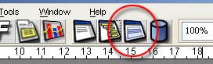

|
 |
<< Previous | Next >> | Table of Contents
5 Bands and groups
In this chapter we'll see how a report is structured and how modify this structure.
5.1 Bands
A report is composed by a variable set of sections named bands. Every band is defined by an height (that should be considered as a minimal height). If the band height is zero, the band will be never visible.
The band height can grown if elements inside it
are stretched. A minimal document has ever:
| Title band |
| Page header |
| Column header |
| Detail |
| Column footer |
| Page footer |
| Summary |
|
| Title band |
is printed only one time and it's the first band. It can be printed on a separate page. |
| Page header | is printed on each page. |
| Column header | is printed on each page that contains a detail band. If a page is split in one or more columns, this band is printed on each column. |
| Detail | is printed for each record in the source |
| Column footer | is printed on each page that contains a detail band. If a page is split in one or more columns, this band is printed on each column. |
| Page footer | is printed on each page. This is a good place where put something like "Page X of Y" |
| Summary | is printed only one time at the end of the report. It can be printed on a separate page. |
|
There is then a special band named background that can be used to define a page background (i.e. using a watermark image).
The position of a band respect other bands can not be modifyed. For each band you can modify the minimum height, the value of a flag that allows to split a band
during filling process if it's bigger than the portion of page in wich it should be printed, and an boolean expression (alias a java expression that
return a Boolean object), with wich is possible control if the band is visible or note. If no expression is defined for a band, the visibility is set to "true".
|  | | Fig.5.1: Bands button on toolbar. |
Pressing the bands button (see fig.5.1) or selecting the menu item View > Bands , the bands form will be opened.
From here it's possible modify the band height and set the band expression.
The title and summary bands can be printed on a new page. To use this feature, you must go in the report properties form, select the tab "more" and use the proper checkbox.
| | Fig.5.3: Report properties, tab more (menu item View > Report properties). |
5.2 Groups
If you need to group data, you can add one or more groups. When a group is created, two new bands are added to the report: the group header and the group footer.
| Title band |
| Page header |
| Column header |
| Group 1 header |
| Group 2 header |
| Detail |
| Group 2 footer |
| Group 1 footer |
| Column footer |
| Page footer |
| Summary |
A group is defined by an expression. For each record processed, JasperReports evaluate this expression. If the expression value is changed, the group change. Please note that JasperReports don't
perform any order on data, so if you use a field as expression and values for this fields are A B A B, four groups are created, against the expected two (one for each record with the field value set to A,
and one for the records number 2 and 3, with the field value set to B). If you present to JasperReports the ordered data (A A B B), all will works fine.
| | Fig.5.4: Groups button on toolbar. |
Pressing the groups button (or selecting the menu item View > Groups) you can open the groups form from wich you can handle groups.
| | Fig.5.5: Group definition form. |
From this form you can set all group properties.
<< Previous | Next >> | Table of Contents
|
|
|
{kind=link}
{kind=link}